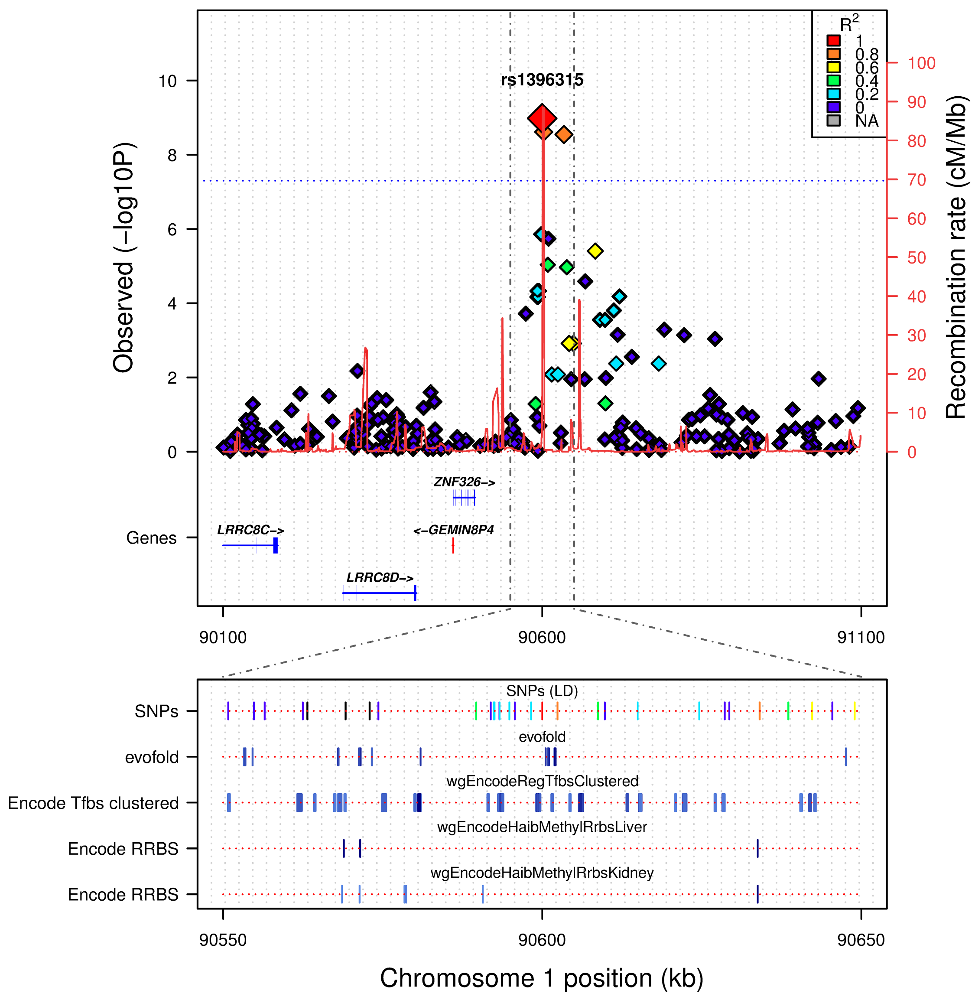
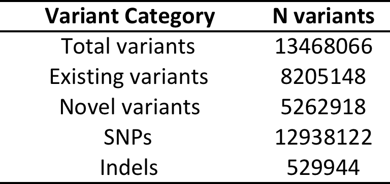
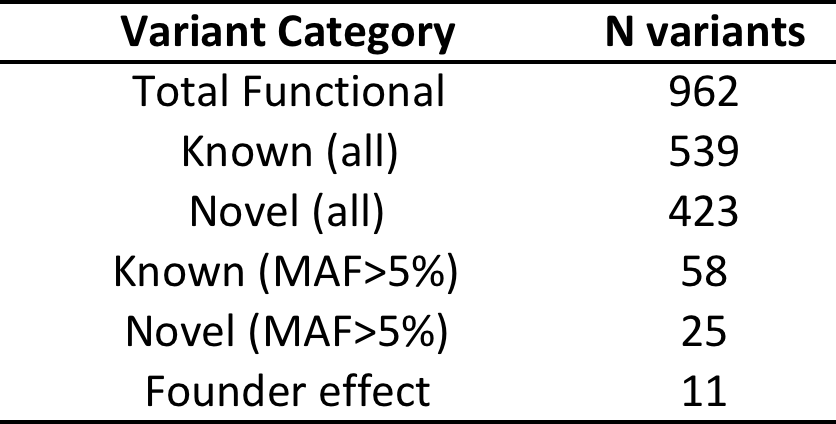
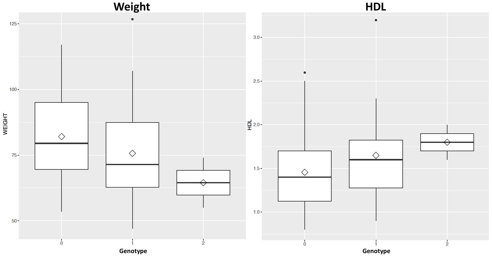
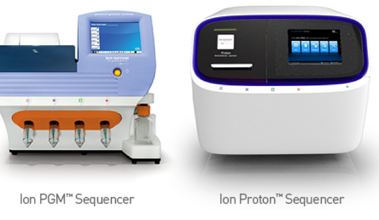
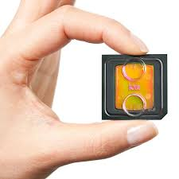

Bioinformatics: a brief tour with some exciting science
Miles Benton* & Donia Macartney-Coxson**
* Institue of Health and Biomedical Innovation, Queensland University of Technology, Brisbane, Australia
** Institue of Environmental Science and Research, Porirua, New Zealand
Biodiscovery Symposium 2016 (VUW)
5th July 2016
Bioinformatics
Image credit: www.biocomicals.blogspot.com
To consult the statistician after an experiment is finished is often merely to ask him to conduct a post mortem examination. He can perhaps say what the experiment died of.
R. A. Fisher. The Indian Journal of Statistics (1933-1960), Vol. 4, No. 1 (1938), pp. 14-17.
You can't fix by analysis what was screwed up by design!
Bobby L. Jones. Department of Human Genetics, University of Pittsburgh
Researchers often want Bioinformaticians to be Biomagicians, people who can make significant results out of non-significant data, or Biomorticians, people who can bury data that disagree with the researcher's prior hypothesis.
Dan Masys. Associate Clinical Professor of Medicine, UCSD
Bioinformatics is not something you are taught, it’s a way of life
Mick Watson PhD
The best bioinformaticians I know are problem solvers – they start the day not knowing something, and they enjoy finding out (themselves) how to do it. It’s a great skill to have, but for most, it’s not even a skill – it’s a passion, it’s a way of life, it’s a thrill. It’s what these people would do at the weekend (if their families let them).
The best thing about being a statistician is that you get to play in everybody's backyard.
John Wilder Tukey.
This holds true for Bioinformatics, I've been lucky enough to work with so many different collaborators.
Collaborative tools

Collaborative authorship
R
- R is great at a base level
- ...but where it shines is its extensibility through libraries
- CRAN (The Comprehensive R Archive Network)
- Currently, the CRAN package repository features 7425 available packages
RStudio
- RStudio is a IDE (Integrated development environment)
- Takes everything R and makes it BETTER!!
R for biologists

The Bioconductor repository currently features:
- 1104 available packages covering a wide range of biological context
- there are also 893 annotation packages
- these cover a variety of technologies, but also numerous organisms
R... it makes things pretty!

... and real time analytics: shinydashboard example
- health data from a fitbit: rblick.shinyapps.io/healthdata
outline


Reproducible research - what do we mean?
Twiter sphere
#reproducibleresearch TweetsMost important tool for #ReproducibleResearch is the *mindset*, when starting, that the end product will be reproducible. Keith Baggerly
Here we refer to...
- Longterm data storage and sharing protocols
- Within and between lab validation
- Transparent methodology (complete methodological steps provided)
- Scientific contribution beyond publication
Big Data: what is it?
© 2015 DataScience.LA - Big Ram is Eating Our Big Data
Where is Big Data?
(Mostly) Largest dataset analyzed is in laptop-size GB range
© 2015 KDnuggets - Where is Big Data?
Data size
What makes data big and what complicates storage (opening up possibilities for the future)
... this is an important point as there is often a HUGE difference between 'raw' data and the data that is finally analysed
Collecting and storing data
- Data capture
- Databases
- Programmatically filtering data
Data capture: REDCap
end user experience (database is hidden and locked away)Data storage: MongoDB
/*insert collection as key:value pairs (I.e. associative array, hash map, dictionary)*/
db.collection.insert({
name: "Miles Benton",
affiliation: "QUT",
tags: [ /*includes arrays*/
"Bioinformatics",
"Human genetics"],
comments: { /*includes embedded objects*/
notes: "Simple comment",
date: Date()}
})
/*-----------Find records---------------*/
db.collection.find(
{ name: {$regex: "Miles"}} , /*add regular expressions*/
{"comments":1,"_id":0}).pretty() /*pretty adds formatting*/
/*---------Formatted output-------------*/
{
"comments" : {
"notes" : "Simple comment",
"date" : "Fri Nov 13 2015 11:54:02 GMT+1100 (AEDT)"
}
}
NoSQL encompasses a wide variety of different database technologies that were developed in response to a rise in the volume of data stored about users, objects and products, the frequency in which this data is accessed, and performance and processing needs.www.mongodb.com
Filtering data: WES
(ODBC: standard protocol for connecting databases - odbcConnect(args kwargs): example from R)Data access and pipeline construction
(going from QC to storage to analysis)Visualisation tools
A simple idea...Interactivity - extensible outlay
Shinyapps.io example
Real-time analytics
Time for some results...

- ~6000 member pedigree
Whole Genome Sequencing
© 2016 Illumina, Inc.
108 core-pedigree members
Illumina HiSeq X10 at the Garvan Institute
Many many TB of data (David Eccles)
QUT HPC facility
Total variants:
Functional* variants:
*Functional = predicted to be damaging in 5 in-silico tests (SIFT, POLYPHEN2, MUTATIONTASTER, PROVEAN, MUTATION ASSESSOR)
Founder Effect Variants
- ACOT4 (Acyl-CoA) Thioesterase 4
- Regulation of lipid metabolism
- Amino acid = p.TYR190ASN
- Freq A = 0.0099 (EUR), 0 (AFR) and 0 (EAS)
- Freq A in NI = 0.26
- Rare allele most likely came from England via Bounty Mutineers and then increased in frequency in NI due to founder effect
Founder Effect Variants
Glaucoma
There is a higher than usual prevalence of Glaucoma on NI, we explored the WGS data for assocated variants
Variant Filtering Strategy
- filtered vcf files at 14% MAF
- filtered based on genotypic models, both dominant (DOM) and allelic (ALL)
- this resulted in 1083 for the DOM model and 1437 for the ALL model
- the final filter was aimed to assess functional impact, we chose to go with SIFT and PROVEAN
- this returned 1 variant
Variant information
- reference allele = C
- alternate allele = T
- MAF CASES = 0.43 vs MAF CONTROLS = 0.05
- ALL p-value: CC_ALL=2.849-07
Predicted as deleterious/damaging
Gene has been previously associated with Retinoblastoma and Wilson's disease (cooper deposits around the cornea)
Diagnostics: Whole Exome Sequencing
Our lab just recieved NATA (National Association of Testing Authorities) accreditation for WES
First and only such facility in Australia offering accredited diagnosis
Ion Proton
 - 2 Human Exomes
- 60-80M filtered reads
- up to 200bp reads
- 2-4 hours run
© 2016 Thermo Fisher Scientific Inc.
After QC, alignment and variant calling get between 28-42K variants per exome
Diagnostics used to take ~4 weeks from generating the data to filtering down the variants and writing a report for the clinician
We needed to make this process faster...
Custom pipeline...
- Sequencing, QC and alignment
- annotation (VEP, SnpSift, dbNSFP, dbSNP)
- variant filtering (bash and R)
- report generation (RMarkdown)
Real-time example: Exome reporting
'Beautiful' reports just a click away...
R/Rstudio + RMarkdown + knitr = Dynamic Documents